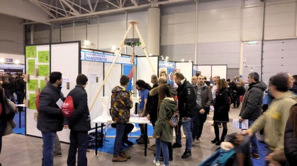
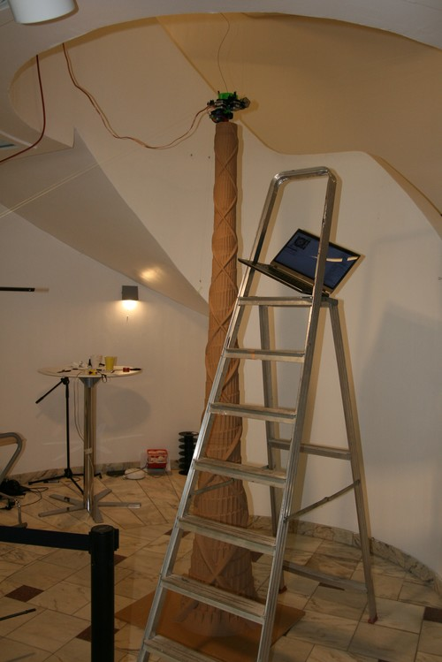

This is the 50'th Hangprinter blog post, and I think it's a good opportunity to elaborate on why I develop Hangprinters.
One-line Version
The Hangprinter Project tries to democratize large scale free form fabrication by developing and spreading a frameless and
cable driven RepRap.
My dad carrying frame material on a deserted road.
Still Quite Short Version
I originally had drop-out engineering students in mind when I started the Hangprinter Project.
When I had been a drop-out myself, I had spread RepRap 3d-printers around to friends and family,
and discovered the difference that the machines made to them.
My Uncle had started to print and sell self-designed cleaning equipment,
my friend had started to design his own climbing equipment for his arborist work,
and my dad had started a little business selling self-made landscape models.
Few things are more relieving to a drop-out than being able to help out economically.
I wanted the Hangprinter Project to be something an engineering drop-out
could pick up and create business, value and a sense of being useful around.
My dad, a HP3 winch, and me entering Fiera di Roma.
Long Version
Like the RepRap Project, the Hangprinter Project tries to provide good and cheap means of production to everyone.
I think this distributes power and promotes democracy.
Founder of the RepRap Project Adrian Bowyer's elaboration on political aspects is found here.
My elaboration follows after the image.
Man looking at a 1m high vase being Hangprinted at Maker Faire Rome.
Democracy?
With production power to fall back upon people can join hard discussions without risking their lifeline.
Perpetual discussion should preserve the wide spread feeling that opportunity is equal and outcome is fair.
To make wealth distribution feel fair,
I think we must make production machinery and knowledge as available as sports equipment and fresh air.
In 2017 the 3D-printing community made a lot of experiments and plastic toys for fun, but progress towards more general
personal fabrication was steady.
A few years down the road, we will be able to make almost anything at home, as automated as we like.
The fun of today leads to greater economical independence tomorrow, for those who join in.
It's important to democracy that we let anyone join in, so everyone can be empowered together and at the same time.

Interested potential users and developers at Maker Faire Rome.
We
I hope we can make Hangprinter good enough to have a positive impact on many people's lives.
If you like the word democracy or if you use other words doesn't really matter to me.
I just like you to join the project for any good reason, that it's useful to you and that you pass all the good things forwards.
Love to The Hangprinter Community from neighbours and hosts at Maker Faire Rome.
It's been a busy month and the next one will be busy too.
I've helped fredrudolf build a v3.3 (aka HP3).
We're preparing a live demo at Maker Faire Rome (Dec 1-3).
After that, I will help Tom create a video series on Hangprinter.
As the bootstrap dev, I'm deeply satisfied with this outlook.
So satisfied that my mind is wandering on to the v4 and other RepRap related projects whenever my various inboxes are empty.
Ok, but first things first.
The HP3 works very well:
The first Benchy fredrudolf printed with his HP3 using a 0.8 mm nozzle.
Then second things; my own HP3 winch looks like this:
A HP3 winch using TMC2130 drivers.
This is planned to be used both in Rome and in Tom's video.
The small 120W power supply is experimental.
I've noted down spool radius and line length on each spool.
These numbers now go straight into Configuration.h.
Note that the Pi on there is optional.
The winch above is finished hardware-wise. I just need to configure the TMC2130s and mount the thing.
Clone Things and Future Things
"But at all Cost, a ThingRepRap Design must live: with a transfusion of one's own worse Life if one can’t retain the Original's better. Better a live Sparrow than
a stuffed Eagle."
- Modified version of Edward FitzGerald's letter to E. B. Cowell, 9/3/1858
I think the HP3 design might just become powerful enough to spread without my long-term help,
especially with Tom planning to make instructions for it.
I think the makers and the clones will come to Hangprinter and transfuse their own Life into it soon.
That will free up a lot of my time, and I'm thinking about what to do with it.
Tilted hot end.
Photo by Jimmy Svanberg.
I've tried living the RepRap slogan "Make one for a friend",
but my friends fear for their pets' and children's lives whenever I offer them a Hangprinter.
I'm considering trying out "Make one for a dev/supporter/potential friend" instead.
Since they're so cheap, I can bring physical HP3's out in the world.
Drop me an email if you're a dev, supporter or potential friend, and let's see if we can come up with some arrangement.
I'm also considering building an extreme high-performance version of Hangprinter, using BLDC motors and oDrive controller
boards.
Madcowswe, lead dev behind the powerful oDrive, has shown interest in helping out, and it's very exciting.
A third idea is to capture the pop-culture I've seen grow around RepRap, and give it a proper, distributed social network
to grow in.
It would emphasize on the social part of 3d-printing and collect everything RepRap in one place.
Dev blog, micro blog, campaign, code, chat groups, Youtube stars, and a marketplace.
Its goal would be to make peer-production so easy, fun and profitable that people can't resist joining in.
Similar web-things are being pioneered in the wonderful Precious Plastics community, see this video.
We're in for an exciting time.
Follow me on Twitter for the small updates.
It's been a month of very technical development.
I feel like I'm searching for the version 3.3 among a forest of new ideas and insights.
The goal of closed loop control, automatic calibration and BLDC driven axes are still out in the blue,
but pushing towards them has taught me lots of things, and made the v3.3 a much better printer.
Anyways.
Going Back to Openscad
I've taken Osika's Fusion 360 CAD files for the version 3 and converted them into Openscad code.
This is mainly because Fusion 360 is proprietary software, but also because I enjoy coding full parametrization,
and because I have a problem with pain in my mouse arm.
Osika's Fusion 360 models had really nice rounded corners that I loved.
This was inconvenient to replicate in Openscad.
I've experimented a little with ImplicitCAD.
It makes rounded corners in scripted CAD files very easy.
The Hangprinter repo will switch to it as soon as ImplicitCAD as gets easy to install.
The Openscad files are in this branch: Openscad_version_3.
These files are now the main version that I'm working on.
Here's a couple of snapshots from yesterday's Openscad development.
A square winch layout that gives space for mounting power supply and electronics, and avoids crossing lines.
A twisted motor bracket design with two little windows for fiddling with set screws and such.
Test Builds
Driving the design work has been little test prints and a goal of making parts less interdependent.
I think the v3.3 is already an easier build and a more workable machine than the single unit version 2 was.
Some of the test prints I've made this month.
Little detail that minimizes the footprint of ABC anchors.
It would be a bit more stable to use three screws in a triangular pattern,
but the sliding concept in itself works well.
I've decided not to include an official Hangprinter extruder in the version 3 repos, at least not for 3 mm or 1.75 mm plastic
filaments.
Others have made extremely good filament extruders already.
The version 3.3 has an easily detachable Nema17 extruder mount.
(This one actually encloses around the beam with the cable. That bug is fixed now.)
The easily detachable extruder mount takes us nicely towards this month's biggest topic:
Automatic Anchor Localization Work
First off, being able to detach the extruder finally lets us use the mover as an aiming plumb, to get our home position
directly below the winch (D-anchor):
Both Hangprinter firmware and the auto-calibration algorithm depends on home position being vertically below the D-anchor.
Drawing a triangle around the on the build plate gives us a more visible home position than before
Attaching ABC-lines and tightening allows us to set their inclination to 0 with a water level measuring tool instead of
having to measure the A, B, and D anchors' Z-positions.
The above mentioned tricks helped greatly with the experiments I've been working on this week,
trying to locate anchors using only data from force sensing resistors (FSRs).
It'd be lovely if it worked, since FSRs are only a few USD each, and they plug right into the thermistor input ports of
any 3d printer microcontroller board.
They're like thermistors, but sensing compression instead of temperature.
The hope was to maintain a constant, adjustable, and measurable tension on all the lines.
This would let us move to known ABCD-positions without knowing the anchors' locations.
Data (line lengths) from 9 valid ABCD-positions makes it possible in theory to calculate anchors' (and mover's) XYZ-position
through a non-linear optimization routine.
Technical note: If the data points had also included magnitude of each force, we would get better calibration, possibly
with fewer data points. See [1] for lots of details. Our data points however, included only line length diffs.
Sensing element along each line looked like this.
They replace an idler bearing on the winch and therefore adds only 2 bearings along each line path.
Because the FSR requires compression and compression requires movement, the sensing element introduces flex in the movement
system.
"Constant tension mode" looked like this.
As you see in the video above, the constant tension mode was quite slow.
This was due to analog reads on alternating channels is very slow on the Arduino Mega board.
A little capacitor has to charge up every time you read from a new analog pin, so there's no way to get completely around
this with software.
The Arduino Mega, with its 16 MHz and 8-bit processor, is also very slow in itself.
Over a period of three days, I collected a few hundred data points (line length differences compared to those in origo).
They were of quite bad quality, +- ca 1 cm.
The error grew to +-15 cm in the output of the optimization algorithm.
The best "automatic anchor localization" I was able to achieve this time.
Blue dots are actual anchor locations, orange dots are the output of the algorithm.
Units of millimeters on all axes.
A few error sources combined up to the +- 1 cm measurement error.
First out, it's actually very hard to measure force with FSRs.
They drift with both time and temperature, and they have a significant hysteresis.
This paper shows a few graphs, explaining a little more.
This contributed with at least ca 10% of the error.
Data collected at two alternating positions 5mm apart over a period of ca 1h 30m.
Each measurement made by loosening the C-line, then tightening it until the FSR reaches a threshold value.
The y-axis has units of millimeters, and we see that the threshold of tightness moved by ca 0.8 mm at position 1 and 0.3
mm at position 2.
The greatest error source however, was inconsistency in spool buildup.
I tuned all axes as accurately as I could, but I just couldn't get consistent repeatability.
Each spool had ca 10 m of idle line (two 5 m lines) on it, which I think a Hangprinter should be able to handle.
(Who would want to run out of line on their 45'th day on a 5m tall print?)
Winding and unwinding even a single axis' two lines often ended up making one of the lines ~2 mm shorter than the other.
This is the same effect as caused the tilt problem during the Babel tower print in February this year.
In version 3.2, we had reduced spool radius and did a few quick experiments to confirm that line buildup compensation could
handle it.
It turns out now that we were wrong and must increase spool radius if we want to avoid having to deal with encoders.
Other error sources:
Flex introduced by sensing element (probably ~1 mm).
We don't know if we managed to start measurements exactly at home position. A quick repeatability test suggested a +-1.5 mm
difference from data collection to data collection.
Parallelograms between anchor points and action points not exactly parallel.
To sum up the FSR work: I couldn't collect accurate data because axes didn't move accurately.
FSRs were convenient and easy to set up but slow and complicated to use.
If you want a good printer, use Mechaduinos instead. It's 10 times as expensive, and 10 times as hard to set up, but more
than 100 times better.
If you are from the future, and have got a faster processor and bigger spools, and you want to re-check if FSRs could be
way to go for auto-calibration,
then I salute you. You are probably right! Have my files: firmware and gcodes, and optimization algorithm with data.
Chris's Basement
To end on a high note, I must point out Chris Riley (aka brotherchris)'s Hangprinter videos:
The 300 % sized Benchy is quite under extruded, but the Hangprinter v3.2 seem to have performed well mechanically.
A bit of overheating near the top was expected since we don't have active cooling.
Wavy lines on the front side stem from under extrusion.
We're planning to try changing the Mechaduinos for FSR-driven tightness sensors.
Code for this is written and posted on v3_fsr branch in the repo.
We did a few more tries at collecting data for auto locating anchor points.
One of them looked like this:
After that try we updated the macro to use constant torque mode on all motors before doing the actual measurement, with
only marginally better results.
Updated gcode macro is here.
We also noticed we needed to send data through stderr for Pronterface to show them during "print"/macro execution.
All the code we run on the v3.2 is published on the Gbg_version_3 branch in the repo.
The last thing that happened this month was a Hangprinter demonstration at The Conference in Malmö.
Thanks to Jaime Reyes who helped me out for two intensive days in Malmö!
The Hangprinter v3 has developed very quickly recently.
We've been developing so intensely, we almost forgot to print a Benchy with the current prototype, called v3.2.
Being a first print, it of course failed with a thermal runaway error, but accuracy and precision looks promising:
Side of a failed (300% scaled) Benchy print. Picture edited to show layer lines more clearly.
Click to zoom.
The v3.2, like the other v3 prototypes, is a dual unit design.
It has a stationary part, called the Winch, where the microcontroller, the motors and all the spools are mounted,
and it has a moving part, called the Mover, where the tool head (currently extruder and hot end), is mounted.
Its source files are found in the Gbg_version_3 branch in the repo.
All CAD files created by Osika.
The v3.2 Winch
The v3.2 winch with only the microcontroller and a bit of wiring missing.
Particularly the Mechaduinos (red PCBs) introduce a lot of new wiring.
Should be reduced in later versions. Should.
The new winch has a few features worth mentioning:
Structural integrity is provided by a slab of MDF.
In addition to being a winch, it also serves as a D-anchor.
Hence the hooks in the corners.
Spool size is decreased and line diameter has increased.
Spool buildup compensation has been found to work well (less than 2 mm errors along 1 m moves),
enabling us to boost ease of use and ease of assembly in this way.
Rolling fairleads with U-bearings and PTFE guiding have been added for the A, B, and C axes, both on the winch and at the
anchors.
We found that hysteresis was introduced by friction between the new, thicker 0.5 mm Fireline and the lamp hooks.
The D-anchors will also be replaced with rolling fairleads, files are already in the repo.
Few dependencies among different parts.
We didn't even plan the motors- and spool placements in detail, we (Osika) just assembled it.
The Mover
The v3.2 mover also feels simple, it's hard to find very much to explain about it.
It has a few features worth mentioning though.
It's very light, allowing quick acceleration and decelerations.
All action points are at the same height, making z-calibration (relative localization of anchor points along z-axis) easier.
Action points are 42 cm apart, longer than on any other mover we've made, giving it a large print volume.
Both A-lines are attached to the same screw, that can slide back and forth along the side of the triangle. This allows mover
z-rotation angle to be adjusted very easily.
It has space for potentially much larger tool heads than the one currently used.
In the video above, Osika is pushing the mover around by hand, without issuing commands or thinking about gcode.
This mode of operation on the v3.2 is enabled by the Mechaduinos running in "torque mode", sending constant amounts of current
through each stepper motor.
It allows us to quickly place the mover at working height or in origo, and it generally just feels nice to control the machine
with our muscles.
This mode is the successor of Vilse's "button mode" presented in an earlier post.
Automatic Localization of Anchor Points
The constant force mode, along with the Mechaduinos' encoders and a few new gcodes has finally enabled us to do some real
testing of the auto calibration algorithm presented earlier.
The new gcodes are G95, G96 and G97.
G95 A[torque] B[torque] C[torque] D[torque] - sets motor(s) in torque mode, applying specified torque between -255 and +255. Negative torque winds line, positive torque
unwinds line. Zero torque fixates axis and sets it back into position mode.
G96 A B C D - Sets the reference point for specified motor's encoder.
G97 A B C D - Read specified motor's relative encoder value and calculate how many millimeters of line that has been wound/unwound since
the previous G96-command was issued for that axis. Only accounts correctly for line buildup if G96 was issued in origo with
lines tight.
The Ugly Part
All of the above commands require the Mechaduinos to communicate with Hangprinter-Marlin, which in itself is a bit of an
ugly duckling of the project.
It may be the oldest fork of rotten spaghetti Github ever hosted.
Not Italian and with no tomato sauce.
But it works.
Anyways, to enable required communication, I've hooked all Mechadionos onto the RAMPS' i2c bus.
The Mechaduino wiring required to run Hangprinter v3.2 firmware: Blue connector receives 12 V, red wire carries 5 V from
RAMPS, D0 and D1 receives dir/step signals, SDA and SCL are hooked to RAMPS' i2c bus.
The Mechaduinos' logic level is at 3V3, while RAMPS' i2c bus runs at 5V, with a 10kOhm internal pull-up. These two 4k7
resistors connect SDA and SCL to 3V3, making the i2c bus run at ca 3.85 V.
Works ok, even if it's not pretty.
The ongoing discussions about how to replace the RAMPS+Mechaduino-solution is very pleasant since anything is better than
the above.
But all those ugly parts enables testing of automatic anchor localization =D Hoooray!
Some basic usage of G96, and G97 is shown in the following video. Also note the already scrapped v3.1 winch and forest of
green/yellow dupont cables connecting i2c bus near end of video.
The Theoretical Part
Slightly more advanced usage of G95, G96, and G97 are detailed in the following auto-calibration gcode macro: link.
That macro also makes heavy usage of the new G8 gcode, which lets you control line lengths like Cartesian RepRaps control
XYZ-positions with G1, while compensating spool buildup.
For example G8 A10 F100, would make line A 10 mm longer than it is in origo, moving at a speed of 100 mm/min.
The basic idea of the linked gcode is to use the C-motor as a sensor.
It moves the A, B, and D motors by known amounts while the C-motor unwinds line.
Once A, B, and D arrives at the known positions, motor C will tighten its line with 20% of its max force, read its encoder,
and release its line again.
This repeats 27 times in the macro.
The linked gcode didn't work perfectly, but I managed to collect 18 consecutive data points, which is enough to auto-calibrate,
at least in theory.
In practice, the algorithm wanted far more and/or far better data. With my 18 data points it was only able to locate the
anchors within +- 37 cm along each axis.
The reason for this is of course imprecise measurements.
The Mechaduinos' torque mode doesn't actually provide a constant tension in the C line, since gear teeth don't transfer
torque perfectly smoothly.
We'll be testing if a force sensing resistor along the sensor axis' line can give us better data.
Until then, very wide herringbone gears will also give us better data.
The error in the 18 collected data points and a linear regression of the error.
The C-line was made shorter for every measurements.
The error's mean value was -1.9. A positive value was expected since the C-motor will wind up extra line for all flex that
exists in the system.
We could clearly have tightened the line harder, particularly during the last 8 measurements when the C-line was shorter.
This makes sense, since the A- and B-lines worked at a better angle, and probably flexed less towards the C-anchor when
the C-line was shorter.
The error's standard deviation was 7.95. This is high. The auto-calibration algorithm needs a standard deviation below ca
2 to produce better calibration values than I can measure by hand.
Expected values were known because we measured the anchor positions by hand.
Those measurements induce systematic errors that would largely be compensated by subtracting the red line from the data.
However, the algorithm's output did in fact get slightly worse after subtracting the linear error.
A more complete and accurate description of the auto-calibration results are hidden in the
script i used,
as well as in other files in the data3 branch in the auto-calibration repo.
On the positive side, it was discovered that the auto-calibration algorithm improved its convergence rate drastically when
we forced the first measurement to be in origo.
I'm quite pleased to have a concrete sense of how much I need to improve measurements before I can actually auto-calibrate.
This video shows how the closed loop ABC axes act like springs when hot end meets an obstacle.
Pictures of this print can be found
here
and
here.
The Sstruder v2 files are published in the repo without any assembly instructions.
Here is how I currently use it:
Notice the bowden tube guiding the filament both above and below the hobb.
Also note that the idler (middle 623 bearing) is placed along the filament path, and secured in place with M3 nuts.
The idler shaft is an M3 screw with objects stacked/screwed in the following order: Screw head -> 623 bearing -> nyloc nut
-> nut -> nut -> 623 bearing -> nut -> 623 bearing.
I put together a closed loop single unit Hangprinter with pancake steppers recently.
The following video shows that it can run upwards along the D-line at 26.6 mm/s.
It is driven by a 17HS08-1004S, rated for 1A but running at 0.56A.
Axis speed is limited by motor stalling/driver resonance.
This single unit machine will help me learn to collect data for the auto-calibration procedure.
Collecting data from single units will be hard because of their large mass.
The auto-calibration algorithm requires less than 2 mm errors in relative line lengths compared to what a massless point
would observe.
With a random error of 1 mm convergence now looks like this:
Figure 1: The output of an
auto calibration simulation
using a random measurement error of 1 mm and plotting on every fifth Newton iteration.
The first plot shows how the algorithm is searching for the anchor points.
The second plot shows the searches for the positions where relative line length measurements were made.
The algorithm missed the six sought anchor coordinates by -28.7, -38.4, -26.3, 16.4, -36.9, and 8.0 mm.
I'm considering the auto-calibration coding as done for now.
In the end it was the excellent paper
"Calibration of a fully-constrained parallel cable-driven robot"
that made me understand that Newton's method was way to go, and that the analytical Jacobian wasn't worthwhile putting into
code.
I'm rounding this post off with thoughts around a funny pic:
Figure 2: Three Mechaduinos and an Arduino Mega with RAMPS.
The latter is orders of magnitude cheaper and weaker, but is still acting like a master,
giving step/dir orders through yellow/green cables.
Mechaduinos kind of go against design principles of the Hangprinter Project.
They cost $50/piece + shipping, they have wasteful amounts of 32-bit processor cycles, they're hard to self-replicate,
they're quite complex to just mount, program and calibrate and easily double the assembly time of an average Hangprinter.
On the other hand, they're OSHW and they can make the Hangprinter work without a babysitter, now.
The Babel Tower print made me concerned about Hangprinter reliability,
so the Mechaduinos are there to teach me about closed loop control.
In the future
load angle data from back emf
might provide the reliability we need.
Thanks to Elijah Craig for showing me the TMC2130 drivers! They can output such data =)
"When the version 3 is up and running, I will focus my dev time on adding
closed loop control,
auto calibration
and DC motors, in that order.
Well, at least that's the plan right now.
I'll prioritize improvements that apply to both single- and dual unit Hangprinters, and keep both branches alive."
Getting Version 3 Up And Running
The version 3 referred to a dual unit design with large spools like shown in the previous post.
This was supposed to reduce weight and reduce spool buildup.
The version 3 since got thinner FireLines (0.18 mm, down from 0.39 mm in version 2),
which further decreased buildup by a factor of 4.5:
Hangprinter version 3 mounted in my basement.
The winch (stationary unit) is the one from the previous post.
An anchor of the Hangprinter version 3.
Distance between anchor points is 27 cm.
One end of each line goes to the winch, and the other end of each line goes to the mover.
Black tape on the floor makes the left corner look like it floats in mid air.
The version 3 is up and hanging, but is not yet up and running.
Small Side Note on Movers
The mover depicted above (moving unit with extruder) is a triangle of Open Beams with a E3D Aero mounted at its center.
It's a scaled up design revision of Osika's small Aero Titan mover.
He has started constructing movers in the following material agnostic manner:
A small Osika-mover using pine wood instead of Open Beams.
This means that Hangprinter version 3 users can count on prints actually finishing. A great relief.
The plug-and-play Mechaduino setup, as well as the possibility to construct custom stepper-servos based on the Mechaduino
Project has made us really excited.
We've added Mechaduinos to version 3's A, B, and C axes at a total cost $150.
Adding Auto-Calibration
Vilse has done some impressive work on simulation and data collection.
Matlab simulation is available here.
To auto-calibrate without user interaction, we need to
Sample relative line lengths \(\theta\) with tight lines at unknown positions \(x_i\) starting from an unknown start position
\(x_0\).
Solve a large non-linear system of equations numerically to find the best fitting set of anchors positions \(a\) and positions
\(x_i\).
Luckily, very skilled researchers have solved this problem before us and published their results.
Studying
this paper
has helped my own understanding a lot.
To be able to quickly make sample \(\theta\), Vilse created "button mode".
Obviously.
It is useful whenever you want to push your Hangprinter around, which is quite often:
Hangprinter version 2 with added buttons running in button mode.
The button mode related modifications to the Hangprinter-Marlin firmware are available here.
We haven't tried seriously to add DC motors yet, but we stay by the plan to do so further down the road.
The Hangprinter Hackathon at Bitraf produced some technical progress.
Fred's video mashup from the hackathon.
Most pictures show an experimental design dubbed "Hangprinter GT".
Big thanks to Bondtech for sponsoring the extruder you see mounted during print.
Besides dividing the Hangprinter into two units,
the GT design also tried out the concept of spanning up linear actuators between winch and ABC anchor points:
The yellow loop runs around the motor shaft and an idler.
The grey line is tied onto the yellow loop.
This concept works wonderfully in theory, and you can even use belt
for the yellow loop to make it easy to build.
In practice you need to keep the loops very tight, or the belts will skip.
We did a quick and dirty patch to solve this.
The dangling bottle of water in the picture above is what keeps our D-line tight.
Hangprinter GT, its creators (Alexander, Nils, Fred and Mikael) and me, holding the bottle of Tøyen-Cola.
The Hangprinter GT turned into a quite bulky installation, so the design won't be continued.
It did shed some light on a few pros and cons with dual unit Hangprinters in general.
Pro: Easy to snap together. Few parts that need to fit each other.
Pro: No absolute requirement of wireless communication.
Pro: Lighter moving unit allows quicker accelerations.
Pro: Increased modularity. ABCD actuators, electronics department and moving unit can be swapped out independently.
Con: Stepper- and hot end cables must be extended manually.
Con: Max stepper cable length (a few meters) limits mounting options.
Back to Spool
Stationary part of a spool-based dual unit Hangprinter design.
The placement of the spools are quite arbitrary so the mounting plate can easily be made with hand tools and no technical
drawing.
Source code for the spools above are found in the
version_3 branch of the repo.
The Benefit of Large Spools
The spool radii are doubled as compared to the standard Hangprinter spools, in order to decrease line buildup.
A doubled spool radius reduces spool buildup to ca 1/4.
Let's step through the maths to kill some time:
To wind in \(2r\) of line onto an empty spool with radius \(r\), we would need to rotate the spool by 2 radians.
A spool with \(x\) meters of line already wound onto it would have \(\epsilon(x)\) of buildup added onto its radius \(r\).
It would wind in \(2(r + \epsilon(x))\) of line if it were rotated by 2 radians.
Without buildup compensation the resulting error would be
To wind in \(2r\) of line on an empty spool with radius \(R=2r\), we would need to rotate the spool by 1 radian.
A buildup of \(\delta(x)\) would cause an error of
The circumference of the spool with radius \(R=2r\) is twice as long as the circumference of the spool with radius \(r\).
The buildup caused by \(x\) m of line should therefore be ca halved on the big spool,
which gives us the approximate total benefit of doubling spool radius:
But wait, there's more. The spools depicted above are also 2 times higher than standard Hangprinter spools.
This should cut buildup in half once again.
If that isn't enough then there's also the possibility to tie in lines mid-air, and run a single line around each spool.
This wall of text has already gotten the line buildup down to 1/8 of what we had before anyways,
so let's wait and see if this is really necessary.
The buildup problems of Hangprinter version 2 were mostly on the D-axis, which had doubled lines (mechanical advantage 2).
We can drop that on version 3 since it has a light moving unit.
To summarize, we cut D-axis buildup to 1/16 and leave ABC buildup at 1/8.
Figure 1: Accumulated required buildup compensation at different positions when applying tricks described above.
Compare to previous compensation plot for reference.
Note the factor 10 difference on the D-axis.
The code to generate this plot can be found here.
After all this theory let's rest our eyes on some Hangprinter version 2 parts designed and printed by Alexander Osika:
Prototype of a moving unit for a dual unit Hangprinter.
This one flexes a bit too easily, but you get the basic idea.
Thanks to E3d for sponsoring the Aero in this picture!
With a modular dual unit approach, you're free to mount only a little triangle in the ceiling if you want.
Alexander Osika made some floor anchors that are easy to build and easy to weigh down.
They have mouse mat rubber glued on underneath and rod rings along the center line
in case you want to tie in lines mid-air to reduce spool buildup, as described above.
When the version 3 is up and running, I will focus my dev time on adding
closed loop control,
auto calibration and DC motors, in that order.
Well, at least that's the plan right now.
I'll prioritize improvements that apply to both single- and dual unit Hangprinters, and keep both branches alive.
This beauty was posted by Mario Lucas here.
This impressive bottom plate was posted by
Jonathan Bahrs
here.
These Hangprinter parts are also very well printed. They were printed by Олег Вартанов and reached me via email.
I love this picture because it shows how one community member has printed and marked parts very neatly for another community
member.
It was posted by Ethan Weikel
here.
This picture shows JakobJakob's bottom plates for version 1 and version 2 Hangprinters.
First posted here.
This nice one with a printed stand and a few other mods was posted on RepRap forums
by rclemence here.
I'm very happy to even see some printers rock their gears a little. This one was posted by
David Majors here.
The Hangprinter repo on has had its first merged pull request!
Committer was awigen.
See commmit here.
The code is about adding an axle to the worm.
I've been wanting one for a long time, so I was very happy about the pull request.
After some further refinements, the worm now looks like this:
In this forum post,
NOVAprint confirmed what I had suspected was a weakness in the sandwich design.
A gap might open between the snelle and the sandwich gear, so that line wraps around the center cylinder.
I never really liked the super-short screws in the sandwich either, so I've designed a push fit solution:
The red part of snelle is added and the blue walls of sandwich gear is where material has been taken away to create the
push fit.
I got the chance to test the improved extruder design recently. It worked better than the previous Sstruder, so stls were
pushed to the repo today.
CAD render of the Sstruder v2.
I also tidied up the stl directory in the repo and experimented with high travel moves.
The Hangprinter moved at 360 mm/s without loosing steps or accumulating errors.
It didn't move in straight lines, but it reached its planned end point.
I spent the weekend Hangprinting at 3D Meetup in Helsingborg.
Thanks to the organizers, you did an amazing job!
Based on the feedback from Helsingborg,
I think the whole Hangprinter community thing is starting to get legs:
[twitter.com], [twitter.com]
I posted a few Tweets recently. Reposting them here now.
Bracing it up again at 3668 mm. (12:45 PM - 7 Mar 2017)
3490 mm. Three days left. (3:48 PM - 6 Mar 2017)
The local newspaper Västerbottens-Kuriren visited the print site today. Print is now 3375 mm tall. (1:01 PM - 6 Mar 2017)
Just crossed 3000 mm. Thanks to DechAmim for becoming a supporter! (9:03 PM - 4 Mar 2017)
The balk in the top of this picture is at 7.5 m. Print is now 2623 mm tall. Still extruding... (10:29 AM - 3 Mar 2017)

Worst feng shui of the day. 2455 mm. (7:59 AM - 3 Mar 2017)
2475 mm. Top is vibrating too much. Adding supporting lines tomorrow. (8:32 PM - 1 Mar 2017)
The climb from 2 to 5 meters has begun. Everything looks ok. (7:33 AM - 1 Mar 2017)
It's a very large print, it's total madness. (3:12 PM - 27 Feb 2017)
Some intense babysitting of a Hangprint in a staircase. (11:44 AM - 24 Feb 2017)
Hello Reprappers and Hangprinterers!
The Babel print gives a lot of lessons, so there's a lot of posts this week.
Ca 1.5 m above ground and with 20 m of line on the D-spool, I've noticed a previously undocumented problem.
My parked Hangprinter.
At print start, the printer was horizontal, but this picture shows a quite significant tilt.
The tilt gets worse with print height and has caused a ca 1 cm drift in the XY-plane when this picture is taken.
The D-line from the corner where the B- and C-sides meet consistently sees a larger spool diameter than the other two corners.
I suspect that subtle differences between the D-fish rings may cause this effect,
or that it is simply the weight of the D-motor causing this.
It is interesting that one corner travels faster while the other two corners stay perfectly horizontal relative to each
other.
Anyways, structured debugging is a job for future tobben.
Present tobben just wants to show you another full figure picture of the print:
1.5 m Babel Tower. Did I mention it is kind of skeuomorph?
My next post will probably drop the SI unit system.
Instead it will leverage on big data and impact the value added Internet things,
featuring intelligent solutions for new normals as required by next generation info capitalism in the cloud (with diamonds).
Disruption will make language hyperlocal like a mashup of microservices in a web of buzz.
Later it will drop-swap written words for virtual broadcasted brandcasting on a blockchain.
(It's just a bit more deep and viral, you know.)
Diversity and non-scalable divergence will immerse the paradigm through the re-realization of a withholding economy,
and possible grand scale peer-to-peer destruction facilitated by social analytics
and the evolution of physical cookies pushing us towards mobile nanomodularity and some seriously driven development.
I managed to sneak up the anchor points yesterday.
The secret trick is to pause and move one anchor point at a time.
Then run a few rounds very slowly after each change, adjusting calibration errors manually with small G6-moves.
Anchor point C elevated by 900 millimeter, anchors A and B still at floor level.
I my case, each anchor movement still produces visible artifacts on the print:
This picture was taken directly after moving the third anchor point.
On the right hand side of this picture, you see the translation of layers of each anchor change.
If you plan on making anchor point movements mid print, I recommend moving them only along the Z-axis and making the movements
in increments of ca half the distance between anchor point and origo.
Ok, enough about the errors, time for a full figure picture:
All three anchor points successfully elevated. Time to print the next meter.
The project of Hangprinting a Babel Tower happens in Sliperiet, Umeå, Sweden.
It is part of the +Project (Swedish link here).
More about Sliperiet is found here.
It seems like some collaboration and maybe even a little community is gathering around the Hangprinter Project.
Right now, there are 5-6 builders out there wrapping their heads around the source files, assembly process and calibration.
No one has sent any pictures though, and I'm a bit worried that builders will lose motivation when they
bump into challenges (bugs that I wrote).
Those who have zoomed in on my Hangprints after I added the worm drive will have noticed a periodic error.
The following pictured Hangprint shows the problem quite clearly:
This error arose because my Hangprinter's worm has not been mounted straight along the motor shaft.
The above animated wobble is a bit exaggerated. You can see and hear the actual wobble in the following old video:
The root of all this wobbliness is a non-straight flat part on the shaft itself.
The motor is covered in tape because I'm about to start grinding the flat area into straightness.
Debugging is so delightful when the cause gets obvious within 10 minutes and the solution involves grinding!
I've conducted a few experiments recently,
and I think I've arrived at a usable implementation of the line buildup compensation that I described in
an earlier blog post.
In this post, I'll try to go a bit more in detail.
The Problem: Account for Changing Spool Radius
Most RepRaps have simple linear relationships between motor position and hot end position.
If their hot end is at the position 100 mm along an axis, their corresponding motor is at step number
\begin{equation}
m = 100\cdot \text{s},
\tag{1}
\label{1}
\end{equation}
where \(\text{s}\) is a constant and \(m\) is the motor's step count.
Hangprinter can not use this simple linear relationship because it winds line around spools.
When there is more line on the spool, the motor winds up more line per step because of the increased radius resulting from
line buildup.
Figure 1: Yellow line builup on a Hangprinter spool causing a radius increase of \(R - r\).
We need to change the linear relationship \(m = x\cdot\text{s}\)
with a more complicated relationship \(m = f(x)\).
Step 1: Find Conversion Factor for Infinitesimal Movement: \(\text{s}'\)
Say we want to move an axis from \(x_0\) to \(x_0 + \text{d}x\).
A simple linear relationship, like in Equation \eqref{1}, will be valid
if \(\text{d}x\) is small enough.
We still have to find the correct conversion factor \(\text{s}'\), but this is easy as long as we can assume \(R\) to be
constant.
Let \(\alpha\) be the number of radians that the spool rotates when the motor makes 1 full revolution.
On Hangprinter version 2 the motors's gears have 9 teeth and the spool's gears have 43 teeth, so we get \(\alpha = 1.32\).
Looking at Figure 1, and assuming \(R\) constant, we would move \(R\alpha\) by doing 1 full motor revolution.
Now say that the motor makes \(t\) steps per revolution, and we have our steps per mm:
\begin{equation}
s' = \frac{t}{R\alpha}.
\tag{2}
\label{2}
\end{equation}
Step 2: Make Radius Depend on Position: \(R(x)\)
In Figure 1 we approximate the buildup as a rectangular torus shape, and \(R\) depends on the volume of that torus.
Figure 2: A rectangular torus.
The volume of the torus depends on the amount of line on the spool like so
where \(h\) is the height of the spool, \(v\) is the volume per unit line, and \(x\) is the position along the line that
corresponds to \(R\).
Note that we need to give \(v\) a negative sign if we define the positive \(x\)-direction to be the direction we move when
we unwind line.
Rearranging Equation \eqref{3} gives us
Just for reference: apart from missing a factor to account for mechanical advantage,
the above equation corresponds exactly to the equation I presented in a previous blog post, see Equation *.
In that equation, \(x\) is split up into the parts to account for mechanical advantage and calibration procedures.
In this theoretical review, we rather want to simplify our notation, like this:
where \(a = \tfrac{t}{\alpha}\), \(c_1\) is the factor that multiplies with \(D\) in Equation * and \(c_0\) is the rest of the constants below the root sign in Equation *.
Step 4: Testing...
I mentioned in the beginning of this post that I've conducted some experiments.
I found that continuously re-applying Equation \eqref{6}, and using the computed values like \(m = x s'\) doesn't produce
nice results.
Figure 3: During the left print, Equation \eqref{6} was applied on every G1 move.
The used used \(x\) was exactly between the move's start point and end point, like suggested in the previous blog post.
The right print was printed without line buildup compensation.
It has some skipped steps along the vertical axis because the lines pulling downwards get tighter and tighter when line
buildup is not accounted for.
Similarly miserable results were achieved by applying Equation \eqref{6} at a constant frequency:
Figure 4: Applying Equation \eqref{6} 40 times per second and hoping that \(\text{d}x\) would be small enough resulted in
random distortions up to ca 3 mm in size.
Step 5: Make \(\text{d}x\) Small Enough Using Theory
A problem with the above approaches was error accumulation.
Say the Hangprinter reached point \(x\) with \(m_0\) on its step counter.
A few minutes later, Hangprinter reaches \(x\) again, but truncation errors have put the step counter to \(m_0 + 1\).
Steps per mm is calculated solely based on \(x\), so it is totally random whether the next truncation error
gets us back to the correct \(m\), or if the error will be increased to \(m + 2\).
This randomness gives the typical random walk pattern along the vertical edges in Figures 3 and 4.
Figure 5: Example random walk patterns by Wikipedia user Morn.
To get back on track with finding \(m\) in Equation \eqref{1}, we integrate \(s'(x)\) from zero to \(x\).
This integral gives us a one-to-one mapping from \(x\) to \(m\).
I was quite surprised that all this theory and volume calculations got me from a straight line relationship to an almost
equally simple square root relationship.
I feared that line buildup compensation would be computationally intensive, so I'm quite pleased it's only one addition,
one subtraction, one multiplication and one square root extra, compared to no compensation.
Even an my old Atmega2560 can handle that.
In the actual firmware, I've changed notation again, so it looks like this:
Figure 7: Accumulated compensation at different positions.
The comparison constant s was calculated assuming a constant radius,
including line buildup experienced in origo.
The difference is biggest along the D-axis, since there are 6 instead of 2 lines along this axis.
The plot's x-axis ends at 5000 mm because the D-spool can only hold ca 30 m of line.
I tried it once, and the experienced error was actually larger than the expected 300 mm.
And finally the first test print to prove it all kind of works:
Figure 7: Applying Equation \eqref{7} made vertical lines more straight, or at least less random.
It's nice to see the printer moving more than 1 m upwards without over-tightening any lines, and then back again to the
same millimeter!
It almost looks functional.
I've been helped by some friends to make a campaign.
It has a presentation video and a logo and a picture of me and everything!
Get to it by clicking the logo below.
Please share, comment and make the Hanprinter Project your own.
The goal of the campaign is to allow Hangprinter to grow faster and more user friendly.
Hangprinter needs a dev team.
It's made to be useful, so it also needs to spread.
To spread more, it needs more of this:
People who are not me assembling a Hangprinter behind my back!
The line compensation code may increase print volume noticeably.
During testing, it has allowed Hangprinter version 2 to go places
where version 1 surely would have over-tightened lines and skipped steps.
Read more...
Compensating Line Buildup on Spools
11-12-2016
I've added to Hangprinter-Marlins some code that
compensates for line buildup on the spools.
Without it, I found that error in steps/mm grew to several percent
as print dimensions grew close to 1 m.
The problem was particularly noticeable on the D-axis since it has three doubled lines,
so moving 1 mm in the D-direction puts 6 mm of line on the D-spool.
Read more...
The Worm Drive Works
8-12-2016
Just tested the worm drive.
I was so happy to see it work that I made a little video.
Read more...
Adjustable D Line Lengths and New Look
26-11-2016
Just made the D-line lengths easier to adjust independently.
This is useful to get Hangprinter's corners in level with bed.
Newest changes are at a
new branch in the repo.
Read more...
Worm Drive on D-axis
18-11-2016
The best part is that the worm is pure parametrized OpenSCAD and renders nicely.
Read more...
Another Stop Motion Video
5-11-2016
Hangprinting 0.9 m high twisted P at Teknisk Museum's 3D-printerfestival.
Note: this text was edited on 7-11-2016.
Read more...
Hangprinter Calibration Manual v0.1
3-11-2016
This post will make it easier to calibrate Clerck by avoiding the need for measurements like this:
Read more...
Oslo Skaperfestival 2016
25-10-2016
Clerck was demonstrated in public for the first time this weekend!
Read more...
Homing the Hangprinter Without Adding Hardware
23-9-2016
I've thought some more about Hangprinter recently, since I'm going to demonstrate it on the
3d printer festival
arranged by the Norwegian Museum of Science and Technology in Oslo.
I've only ever mounted and calibrated Hangprinter once before,
so getting the manual homing to work fast enough worries me a bit.
I don't have the time to implement the proposed
accelerometer dependent homing procedure
before the festival.
Read more...
Yet Another Very Simple Extruder Design
21-9-2016
I've thought about a second generation Hangprinter lately, including the extruder.
My current favourite re-design uses two motors running synchronously.
Read more...
Why Optimize Chaotic Production?
10-9-2016
RepRappers have noticed me that basing the story line of my
my Master's thesis
on productivity numbers doesn't resonate with them.
This tickled me to think about and formulate why I do what I do, hence this post.
Read more...
Portable Gcode and Short Status
5-9-2016
Today I asked a question on reprap forums that has puzzled me for a long time.
Why don't we share gcode instead of 3d models?
The technical obstacles are small and it would be an obvious optimization of chaotic production.
See the forum post for details.
Hoping for an interesting discussion there.
Read more...
Optimize Chaotic Production
29-6-2016
I presented my Master's recently, with a story line that was very RepRap centric.
I'd like to re-present and develop my thoughts with some colors here.
Be warned that this is a post about why I RepRap, not how I RepRap.
Read more...
Update and Clerck Build Instructions
8-2-2016
I've been working on Open Source Ecology 3D printer workshops (see my work log for exactly what I've been up to)
the past month, and will continue to work on that until mid summer.
Read more...
Everything on this homepage, except those videos who are published via Vimeo or Youtube, is licensed under the Gnu Free Documentation License.
The videos published via Vimeo or Youtube are also licensed via Vimeo or Youtube.


{kind=link}
{kind=link}
{kind=link}
{kind=link}
{kind=link}
{kind=link}
{kind=link}
{kind=link}
{kind=link}
{kind=link}
{kind=link}
{kind=link}
{kind=link}
{kind=link}
{kind=link}
{kind=link}
{kind=link}
{kind=link}
{kind=link}
{kind=link}
{kind=link}
{kind=link}
{kind=link}
{kind=link}
{kind=link}
{kind=link}
{kind=link}
{kind=link}
{kind=link}
{kind=link}
{kind=link}
{kind=link}
{kind=link}
{kind=link}
{kind=link}
{kind=link}
{kind=link}
{kind=link}
{kind=link}
{kind=link}
{kind=link}
{kind=link}
{kind=link}
{kind=link}
{kind=link}
{kind=link}
{kind=link}
{kind=link}
{kind=link}
{kind=link}
{kind=link}
{kind=link}
{kind=link}
{kind=link}
{kind=link}
{kind=link}
{kind=link}
{kind=link}
{kind=link}
{kind=link}
{kind=link}
{kind=link}
{kind=link}
{kind=link}
{kind=link}
{kind=link}
{kind=link}
{kind=link}
{kind=link}
{kind=link}
{kind=link}